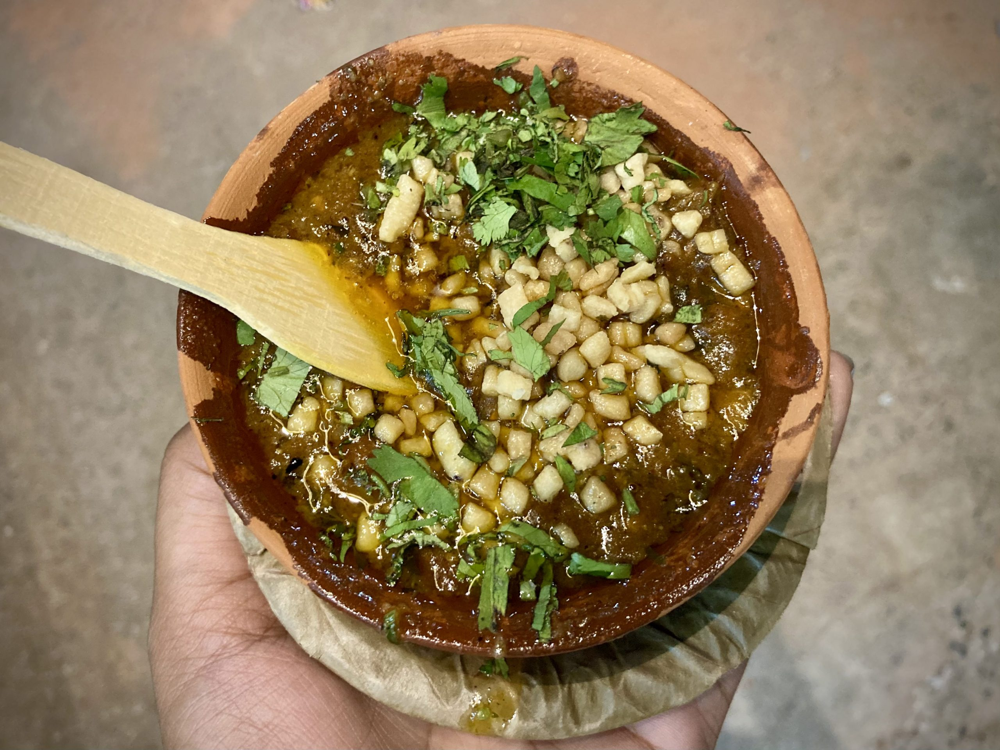

Tamatar Chat
Tamatar Chaat is a local version of aloo chaat and is made from a mashed mixture of boiled potatoes, tomatoes, onions, green chillies and fresh coriander leaves. This mouthwatering spicy chaat is too hot to handle and is not for the faint-hearted. Spices like pounded ginger, red chilli powder and garam masala are splashed into the dish making it deliciously fiery. It is served in a dona, a bowl made with palash leaves.
